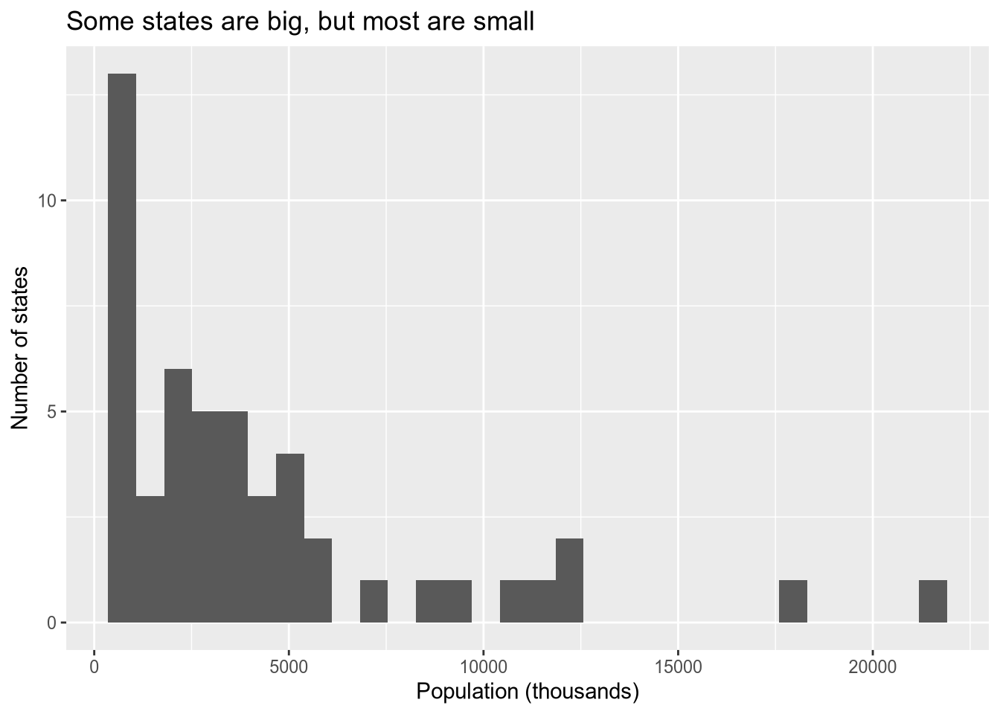
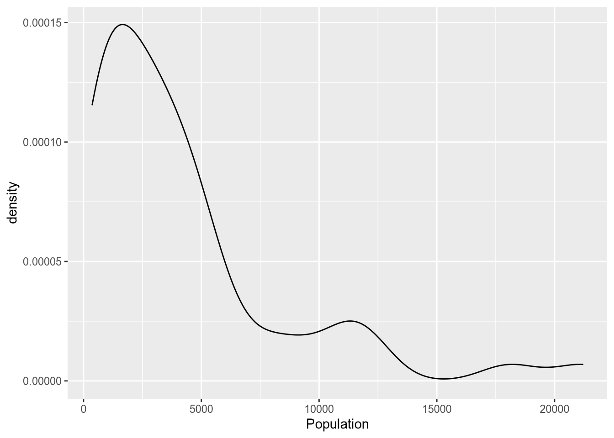
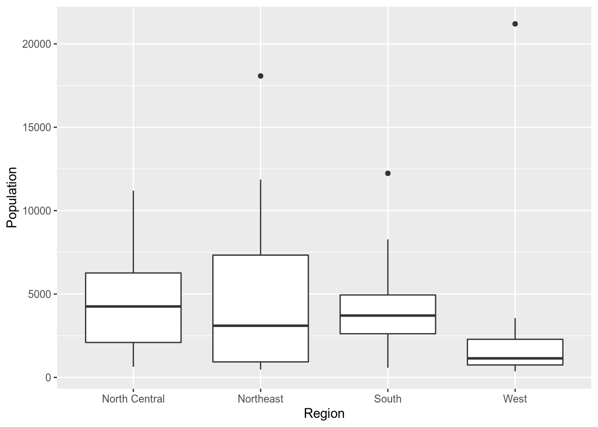
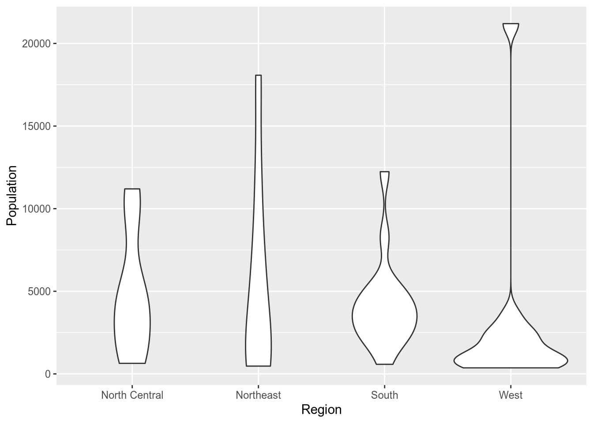
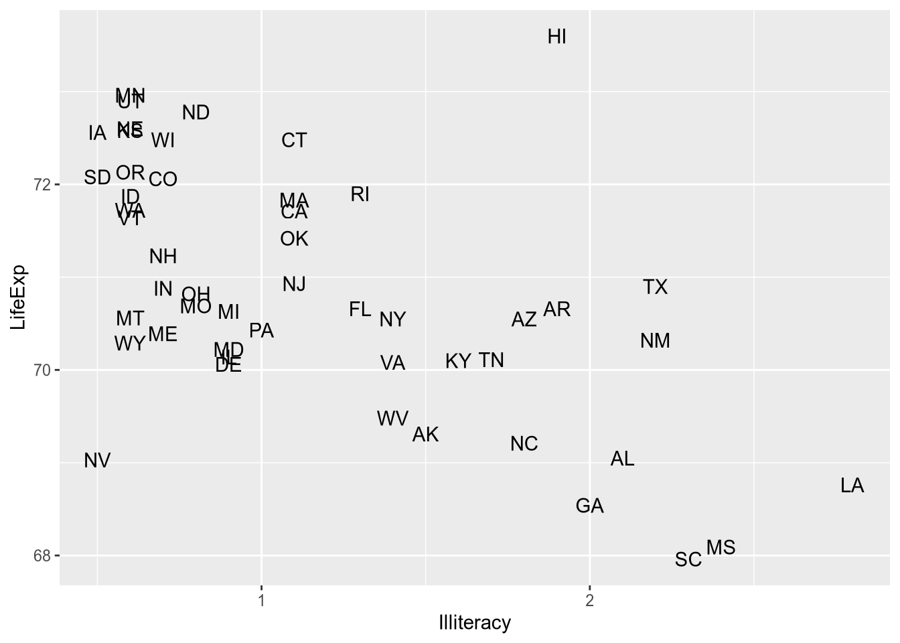
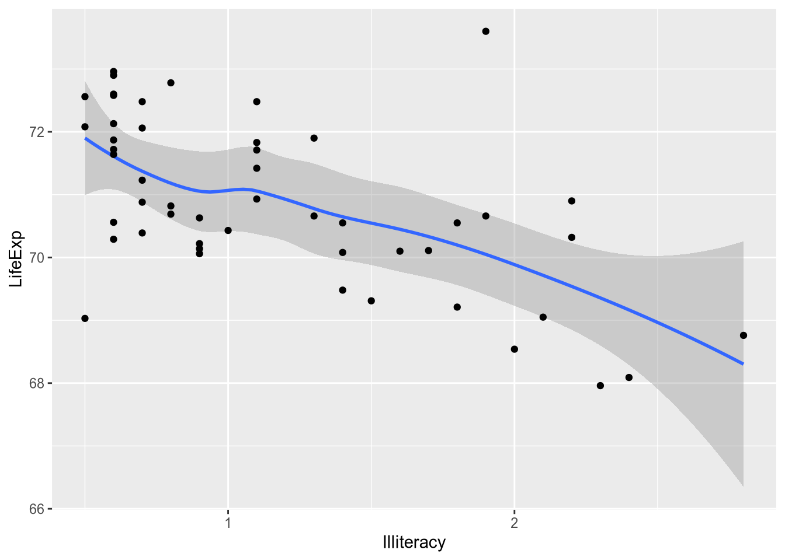
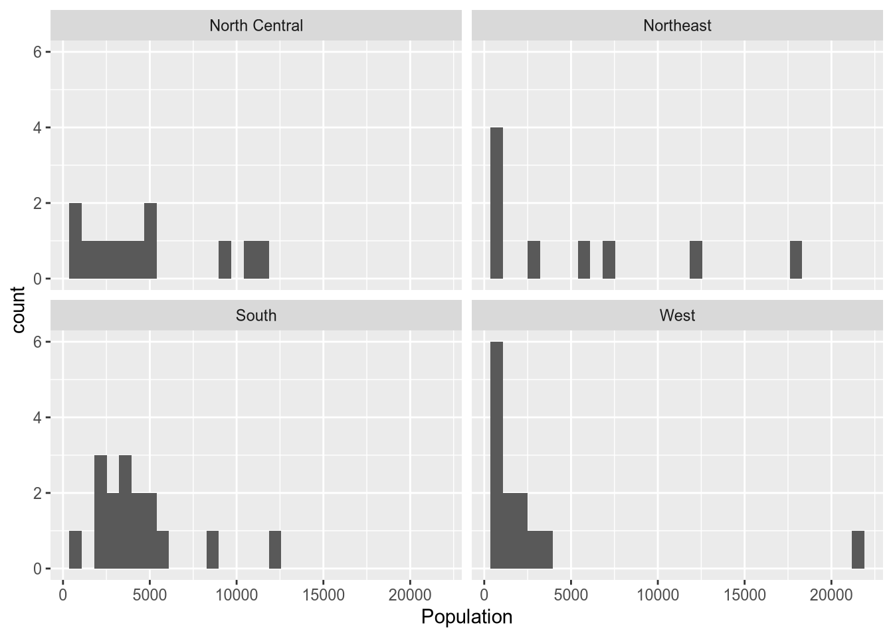
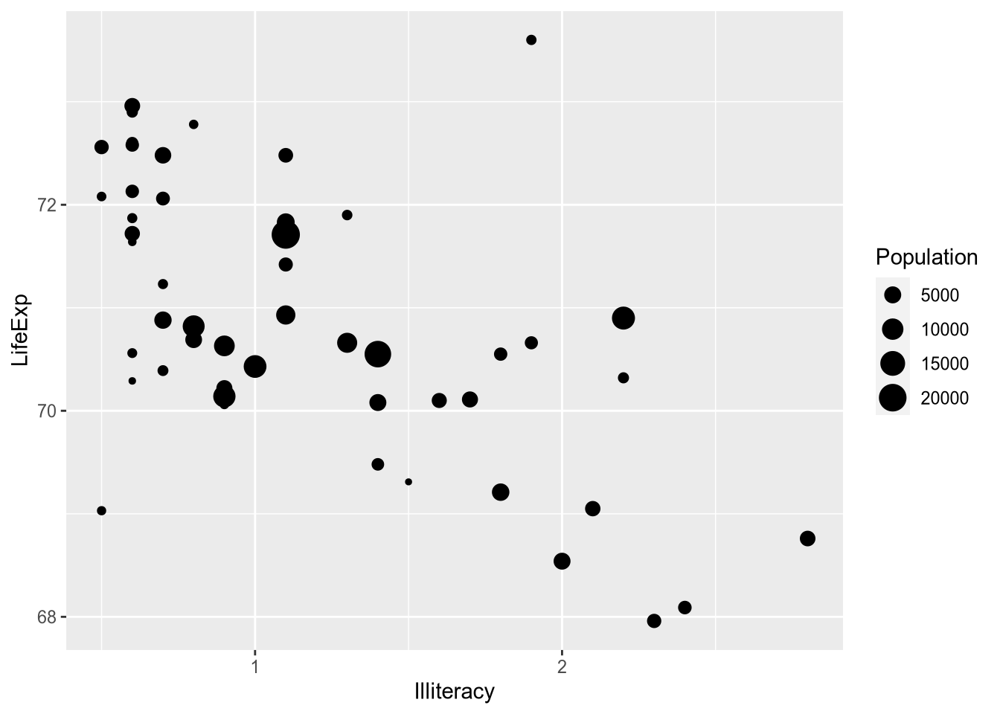
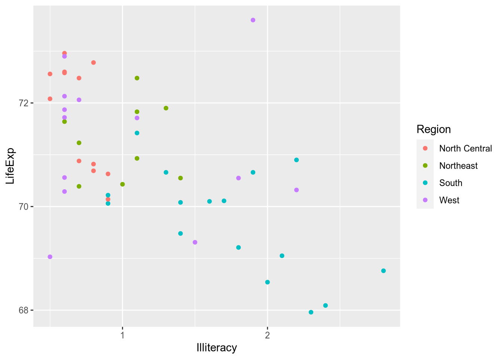
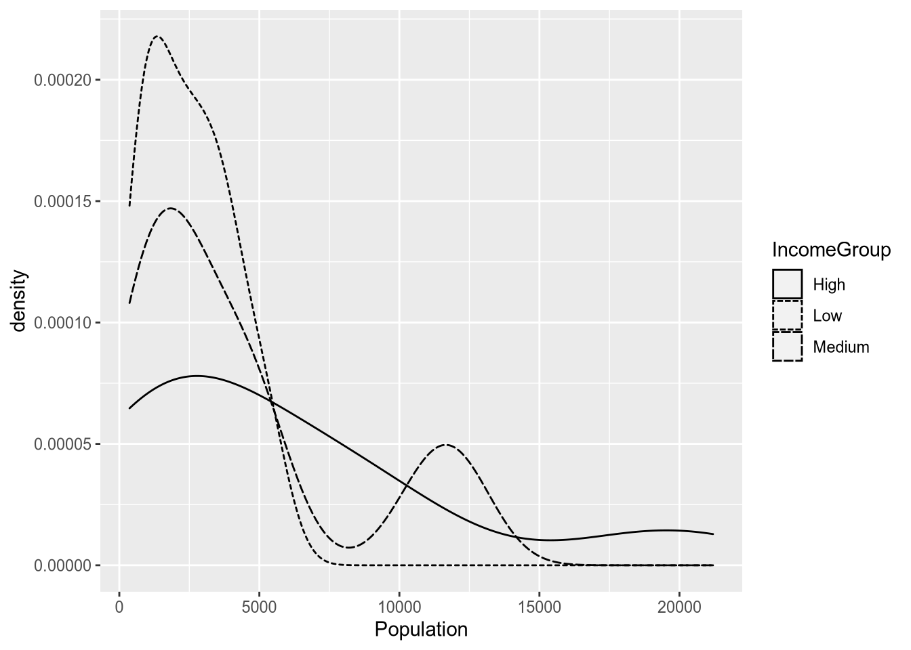

4 Data Visualization
Visualization is most important at the very beginning and the very end of the data analysis process. In the beginning, when you’ve just gotten your data together, visualization is perhaps the easiest tool to explore each variable and learn about the relationships among them. And when your analysis is almost complete, you will (usually) use visualizations to communicate your findings to your audience.
We only have time to scratch the surface of data visualization. This chapter will cover the plotting techniques I find most useful for exploratory and descriptive data analysis. We will talk about graphical techniques for presenting the results of regression analyses later in the class—once we’ve, you know, learned something about regression.
4.1 Basic Plots
We will use the ggplot2 package, which is part of—I’m as tired of it as you are—the tidyverse.
library("tidyverse")For the examples today, we’ll be using a dataset with statistics about the fifty U.S. states in 1977,11 which is posted on my website.
state_data <- read_csv("http://bkenkel.com/data/state-data.csv")
state_data## # A tibble: 50 × 12
## State Abbrev Region Population Income Illiteracy LifeExp Murder
## <chr> <chr> <chr> <dbl> <dbl> <dbl> <dbl> <dbl>
## 1 Alabama AL South 3615 3624 2.1 69.05 15.1
## 2 Alaska AK West 365 6315 1.5 69.31 11.3
## 3 Arizona AZ West 2212 4530 1.8 70.55 7.8
## 4 Arkansas AR South 2110 3378 1.9 70.66 10.1
## 5 California CA West 21198 5114 1.1 71.71 10.3
## # ... with 45 more rows, and 4 more variables: HSGrad <dbl>, Frost <dbl>,
## # Area <dbl>, IncomeGroup <chr>When I obtain data, I start by looking at the univariate distribution of each variable via a histogram. The following code creates a histogram in ggplot.
ggplot(state_data, aes(x = Population)) +
geom_histogram()## `stat_bin()` using `bins = 30`. Pick better value with `binwidth`.Let’s walk through the syntax there. In the first line, we call ggplot(), specifying the data frame to draw from, then in the aes() command (which stands for “aesthetic”) we specify the variable to plot. If this were a bivariate analysis, here we would have also specified a y variable to put on the y-axis. If we had just stopped there, we would have a sad, empty plot. The + symbol indicates that we’ll be adding something to the plot. geom_histogram() is the command to overlay a histogram.
We’ll only be looking at a few of the ggplot commands today. I recommend taking a look at the online package documentation at http://docs.ggplot2.org to see all of the many features available.
When you’re just making graphs for yourself to explore the data, you don’t need to worry about things like axis labels as long as you can comprehend what’s going on. But when you prepare graphs for others to read (including those of us grading your problem sets!) you need to include an informative title and axis labels. To that end, use the xlab(), ylab(), and ggtitle() commands.
ggplot(state_data, aes(x = Population)) +
geom_histogram() +
xlab("Population (thousands)") +
ylab("Number of states") +
ggtitle("Some states are big, but most are small")## `stat_bin()` using `bins = 30`. Pick better value with `binwidth`.
The density plot is a close relative of the histogram. It provides a smooth estimate of the probability density function of the data. Accordingly, the area under the density plot integrates to one. Depending on your purposes, this can make the y-axis of a density plot easier or (usually) harder to interpret than the count given by a histogram.
ggplot(state_data, aes(x = Population)) +
geom_density()
The box plot is a common way to look at the distribution of a continuous variable across different levels of a categorical variable.
ggplot(state_data, aes(x = Region, y = Population)) +
geom_boxplot()
A box plot consists of the following components:
- Center line: median of the data
- Bottom of box: 25th percentile
- Top of box: 75th percentile
- Lower “whisker”: range of observations no more than 1.5 IQR (height of box) below the 25th percentile
- Upper “whisker”: range of observations no more than 1.5 IQR above the 75th percentile
- Plotted points: any data lying outside the whiskers
If you want to skip the summary and plot the full distribution of a variable across categories, you can use a violin plot.
ggplot(state_data, aes(x = Region, y = Population)) +
geom_violin()
Technically, violin plots convey more information than box plots since they show the full distribution. However, readers aren’t as likely to be familiar with a violin plot. It’s harder to spot immediately where the median is (though you could add that to the plot if you wanted). Plus, violin plots look goofy with outliers—see the “West” column above—whereas box plots handle them easily.
For visualizing relationships between continuous variables, nothing beats the scatterplot.
ggplot(state_data, aes(x = Illiteracy, y = LifeExp)) +
geom_point()When you’re plotting states or countries, a hip thing to do is plot abbreviated names instead of points. To do that, you can use geom_text() instead of geom_point(), supplying an additional aesthetic argument telling ggplot where to draw the labels from.
ggplot(state_data, aes(x = Illiteracy, y = LifeExp)) +
geom_text(aes(label = Abbrev))
Maybe it’s overwhelming to look at all that raw data and you just want a summary. For example, maybe you want an estimate of expected LifeExp for each value of Illiteracy. This is called the conditional expectation and will be the subject of much of the rest of the course. For now, just now that you can calculate a smoothed conditional expectation via geom_smooth().
ggplot(state_data, aes(x = Illiteracy, y = LifeExp)) +
geom_smooth()## `geom_smooth()` using method = 'loess'And if you’re the kind of overachiever who likes to have the raw data and the summary, you can do it. Just add them both to the ggplot() call.
ggplot(state_data, aes(x = Illiteracy, y = LifeExp)) +
geom_smooth() +
geom_point()## `geom_smooth()` using method = 'loess'
4.2 Saving Plots
When you’re writing in R Markdown, the plots go straight into your document without much fuss. Odds are, your dissertation will contain plots but won’t be written in R Markdown, which means you’ll need to learn how to save them.
It’s pretty simple:
- Assign your
ggplot()call to a variable. - Pass that variable to the
ggsave()function.
pop_hist <- ggplot(state_data, aes(x = Population)) +
geom_histogram()
ggsave(filename = "pop-hist.pdf",
plot = pop_hist,
width = 6,
height = 3)If you want plot types other than PDF, just set a different extension. See ?ggsave for the possibilities.
4.3 Faceting
Suppose you want to split the data into subgroups, as defined by some variable in the data (e.g., the region states are in), and make the same plot for each subgroup. ggplot’s faceting functions, facet_wrap() and facet_grid(), make this easy.
To split up plots according to a single grouping variable, use facet_wrap(). This uses R’s formula syntax, defined by the tilde ~, which you’ll become well acquainted with once we start running regressions.
ggplot(state_data, aes(x = Population)) +
geom_histogram() +
facet_wrap(~ Region)## `stat_bin()` using `bins = 30`. Pick better value with `binwidth`.
If you don’t like the default arrangement, use the ncol argument.
ggplot(state_data, aes(x = Population)) +
geom_histogram() +
facet_wrap(~ Region, ncol = 1)## `stat_bin()` using `bins = 30`. Pick better value with `binwidth`.
For two grouping variables, use facet_grid(), putting variables on both sides of the formula.
ggplot(state_data, aes(x = Population)) +
geom_histogram() +
facet_grid(Region ~ IncomeGroup)## `stat_bin()` using `bins = 30`. Pick better value with `binwidth`.4.4 Aesthetics
Faceting is one way to incorporate information about additional variables into what would otherwise be a plot of just one or two variables. Aesthetics—which alter the appearance of particular plot features depending on the value of a variable—provide another way to do that.
For example, when visualizing the relationship between statewide illiteracy and life expectancy, you might want larger states to get more visual weight. You can set the size aesthetic of the point geometry to vary according to the state’s population.
ggplot(state_data, aes(x = Illiteracy, y = LifeExp)) +
geom_point(aes(size = Population))
The ggplot2 documentation lists the available aesthetics for each function. Another popular one is colour, which is great for on-screen display but not so much for the printed page. (And terrible for the colorblind!)
ggplot(state_data, aes(x = Illiteracy, y = LifeExp)) +
geom_point(aes(colour = Region))
For line graphs or density plots, you can set the linetype to vary by category.
ggplot(state_data, aes(x = Population)) +
geom_density(aes(linetype = IncomeGroup))
(I always find these incomprehensible with more than two lines, but maybe that’s just me.) You can use multiple aesthetics together, and you can even combine aesthetics with faceting, as in the following example.
ggplot(state_data, aes(x = Illiteracy, y = LifeExp)) +
geom_smooth() +
geom_text(aes(label = Abbrev, colour = Region, size = Population)) +
facet_wrap(~ IncomeGroup)## `geom_smooth()` using method = 'loess'But the fact that you can do something doesn’t mean you should. That plot is so cluttered that it’s hard to extract the relevant information from it. Data visualizations should communicate a clear message to viewers without overwhelming them. To do this well takes practice, patience, and maybe even a bit of taste.
4.5 Appendix: Creating the Example Data
The example data comes from data on U.S. states in 1977 that are included with base R. See ?state.
library("tidyverse")
state_data <- state.x77 %>%
as_tibble() %>%
add_column(State = rownames(state.x77),
Abbrev = state.abb,
Region = state.region,
.before = 1) %>%
rename(LifeExp = `Life Exp`,
HSGrad = `HS Grad`) %>%
mutate(IncomeGroup = cut(Income,
breaks = quantile(Income,
probs = seq(0, 1, by = 1/3)),
labels = c("Low", "Medium", "High"),
include.lowest = TRUE))
write_csv(state_data, path = "state-data.csv")Why 1977? Because it was easily available. See the appendix to this chapter.↩